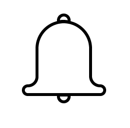
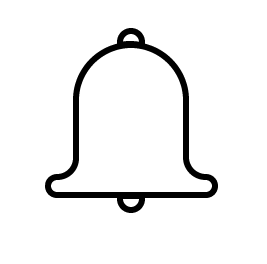
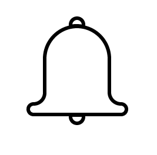

Todos
Mixes
En tiempo real
Música
Lectura
Programación
Minimalismo
Croché
Subidos recientemente
Novedades para ti
Vistos

Todos
Mixes
En tiempo real
Música
Lectura
Programación
Minimalismo
Croché
Subidos recientemente
Novedades para ti
Vistos
LECTURAS | 18 Libros que he leído y amado (o no tanto) de...
Raquel Brune
11,458 vistas • hace 3 días
Últimos libros leídos + qué estoy leyendo y próximas...
irene nortes
49,274 vistas • hace 2 semanas

10 hábitos que cambiaron mi vida 🧘🏻♀️| Nancy Loaiza
Andra Benitez
4,834 vistas • hace 2 días
Cómo poner tu vida en orden para volver a la rutina
Andrea Benitez
4,476 vistas • hace 1 día
Libros que releería una y otra vez
Raquel Brune
58,408 vistas • hace 5 días
Crochet Crop T-shirt Tutorial
Chenda DIY
1,901 vistas • hace 3 meses
Libros adictivos
Lauryta_books
255,394 vistas • hace 7 meses

Como tener más tiempo | Tips de organización
Nancy Loaiza
6,873 vistas • hace 2 años
Organiza tu vida
Raquel Brune
27,407 vistas • hace 1 día
Consejos de organización y estudio
Andrea Benitez
6,388 vistas • hace 6 días
Hábitos para un buen año
Raquel Brune
87,083 vistas • hace 2 meses
Estudia menos, logra más
Nancy Loaiza
11,458 vistas • hace 3 días